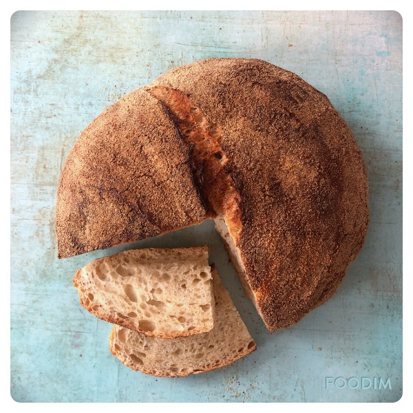

Basic No-Knead Bread Basic No-Knead Bread by Jim Lahey and Nigella Lawson
 1
loaf
1
loaf 24
hours
24
hours Source
Source Meat
Meat
A crusty, rustic round loaf with an open crumb — made with just four ingredients and no kneading

3¼ cups (400g)white bread flour, plus more for dusting1¼ tsp (8g)fine salt¼ tsp (1¼g)instant yeast1¼ cups (300g)cool water (55-65°F / 12-18°C)1 tbsp (15g)lemon juice
In a medium bowl, stir together the flour, salt, and yeast. Add the water and mix with a wooden spoon or your hand until you have a wet, sticky dough, about 30 seconds. The dough should be really sticky to the touch — if it’s not, mix in another tablespoon or two of water.
Cover the bowl with a plate, tea towel, or plastic wrap. Let sit at room temperature (about 72°F / 22°C), out of direct sunlight, for 16 to 18 hours. The dough is ready when the surface is dotted with bubbles and it has more than doubled in size. This slow rise is the key to flavour.
Generously flour a work surface. Use a spatula to scrape the dough out of the bowl in one piece. Pull the four edges of the dough up and toward the centre to roughly form a ball. Turn the dough seam-side down onto a well-floured cotton tea towel. Be generous with the flour on the towel — the dough is very wet and will stick otherwise. Dust the top with more flour, wheat bran, or cornmeal. Cover loosely with another towel and let rise for 1 to 2 hours, until roughly doubled in size and the dough doesn’t spring back readily when poked with a finger.
At least 30 minutes before the dough is ready, place a heavy covered pot (cast iron Dutch oven, enamel, Pyrex, or ceramic) in the oven and preheat to 450°F (230°C).
Carefully remove the pot from the oven and take off the lid. Slide your hand under the towel and turn the dough over into the pot, seam-side up. It may look messy — that’s fine. Give the pot a shake or two to distribute the dough more evenly. Cover with the lid and bake for 20 minutes.
Remove the lid and bake for another 15 minutes, until the loaf is a deep chestnut brown. Lift the bread out of the pot and cool completely on a wire rack before slicing, 1-2 hours.